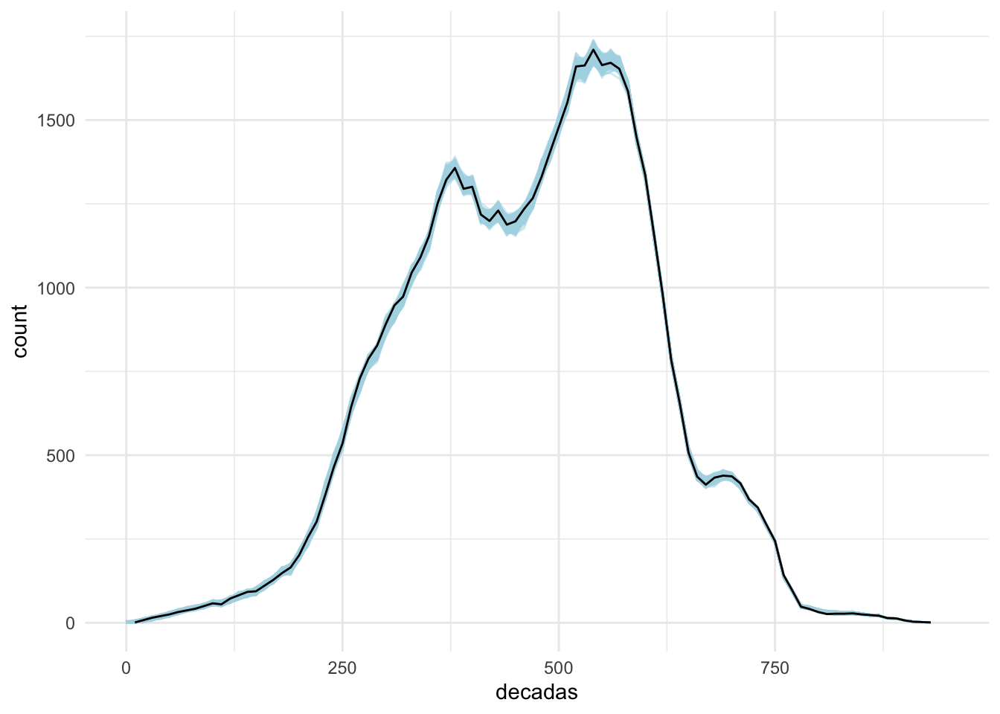
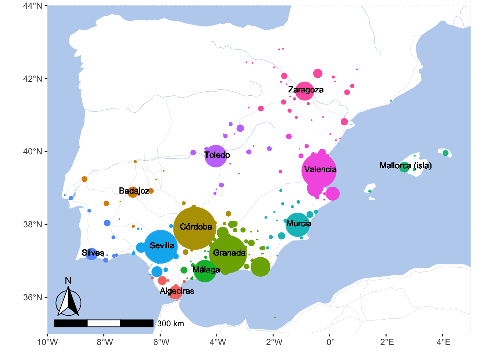
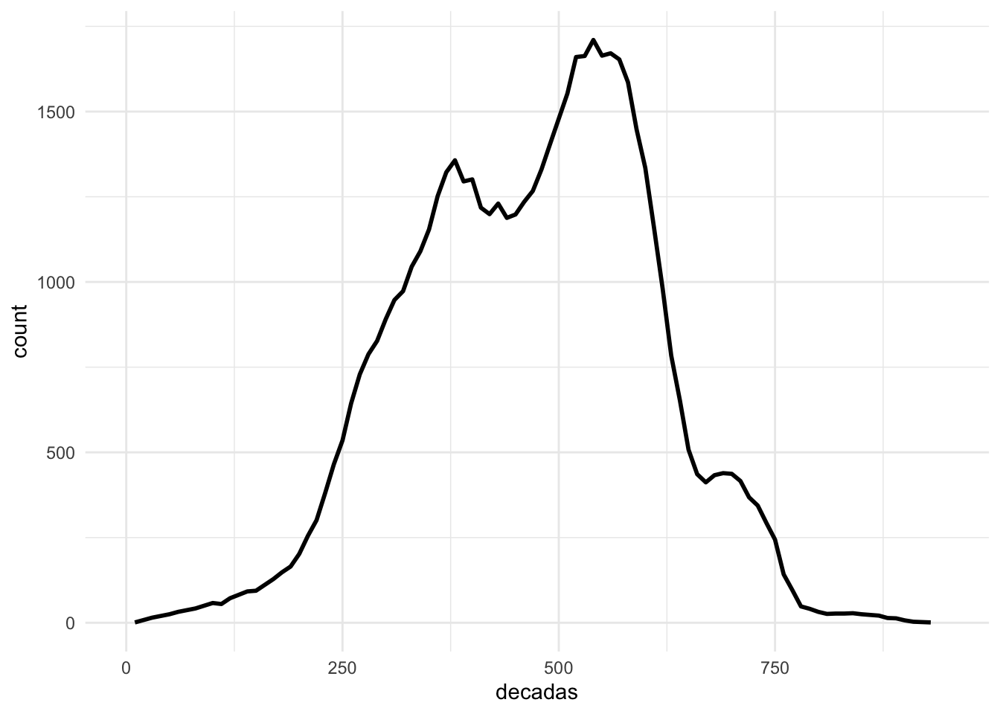

12 Modeling Complex Entities
12.1 Modeling Regions
Let’s begin with loading necessary libraries and the PUA data.
library(tidyverse)
library(sf)
library(rnaturalearth)
library(rnaturalearthdata)
library(ggmap)
library(ggspatial)
library(ggrepel)
PUA <- readRDS("./data/PUA_processed/PUA_allDataTables_asList.rds")12.1.1 Base map for al-Andalus
Let’s create a basemap for al-Andalus, which we can then quicly re-load whenever we need it:
world <- ne_countries(scale = "medium", returnclass = "sf")
rivers_df <- readRDS("./data/map_objects/rivers_df.rds")
aral_sea_df <- readRDS("./data/map_objects/aral_sea_df.rds")
routes_df <- readRDS("./data/map_objects/routes_df.rds")
# focus on al-Andalus: we simply need to change xlim and ylim parameters:
xlimAnd=c(-10,5); ylimAnd=c(35,44)
base_plot_andalus <- ggplot(data = world) +
geom_sf(fill="white", color="white") +
# routes from Althurayya
geom_path(data = routes_df,aes(x = long, y = lat, group = group),
color = roadColor, linewidth = .2) +
# rivers and the aral sea
geom_path(data = rivers_df,aes(x = long, y = lat, group = group),
color = waterColor, linewidth = .2) +
geom_polygon(data = aral_sea_df,aes(x = long, y = lat, group = group),
color = waterColor, fill = waterColor, size = .2) +
# annotation scale
annotation_scale(location = "bl", width_hint = 0.25) +
annotation_north_arrow(location = "bl", which_north = "true",
pad_x = unit(0.0, "in"), pad_y = unit(0.2, "in"),
style = north_arrow_fancy_orienteering) +
# map limits and theme
coord_sf(xlim = xlimAnd, ylim = ylimAnd, expand = FALSE)
save(base_plot_andalus, file = "./data/basemap/base_plot_andalus.RData")
# NOW TRY THEMED
waterColor <- "lightsteelblue2" #
roadColor <- "grey90"
themeParameters <- theme(panel.background = element_rect(fill = waterColor),
axis.title.y=element_blank(),
axis.title.x=element_blank(),
panel.grid.major = element_line(color = waterColor,
linetype = "dotted",
linewidth = 0.5))
base_plot_andalus_themed <- base_plot_andalus + themeParameters
save(base_plot_andalus_themed, file = "./data/basemap/base_plot_andalus_themed.RData")We now can load the prepared basemap and them customize its appearance with a theme, or load a basemaps with a theme already applied. This way we can now focus only on the data that needs to be added to the basemap.
load("./data/basemap/base_plot_andalus_themed.RData")
base_plot_andalus_themed
We have discussed an option of grouping toponyms into regions by some kind of historical administrative divisions. However, we also ran into a problem of instability of such aggregations, which complicates this task.
Another option — or, perhaps, a complimentary option — is to aggregate smaller toponyms into larger places algorithmically. Namely, we can select a certain number of settlements that would act as magnets (let’s call them gravitons), absorbing smaller places (let’s call them satellites). We can make a selection of gravitons based on their importance: for example, based on how many people we find associated with those places in the PUA data. Then, we can then use some algorithmic solution to associate all minor places with the closest graviton. For example, we can calculate distances* from each sattelite to all the gravitons; then we can associate each satellite with the closest graviton. This appraach will not necessarily create the best representation of sub-regions, but it is fast and quite transparent. After creating this algorithmic divisions we can always tweak associations of individual satellites according to our additional knowledge which we did not factor in into the algorithmic implementation. The advantage of such an approach is also in its flexibility: not only can we can always readjust these divisions, we can also experiment with different variations until we find the most optimal one.
Let’s find our top places first. We can pick them from a map that we generated before. Looking at a map is always a good idea, since we may want to combine two prominent locations that are very close to each other into a single graviton; and we might want to single out a minor location as a graviton in order to preserve a representation of some remote region that does not have locations with high frequencies.
 Based on the map, I would start with a the following vector (roughly, west to east):
Based on the map, I would start with a the following vector (roughly, west to east):
imanes_vector <- c("Silves", "Badajoz", "Sevilla", "Algeciras", "Córdoba",
"Málaga", "Toledo", "Granada", "Almeria", "Murcia",
"Valencia", "Zaragoza", "Mallorca (isla)")
imanes <- PUA$lugar %>%
filter(nombre_castellano %in% imanes_vector) %>%
rename(region = nombre_castellano, latR = lat, lngR = lng) %>%
select(region, latR, lngR)
imanes## # A tibble: 12 × 3
## region latR lngR
## <chr> <dbl> <dbl>
## 1 Córdoba 37.9 -4.78
## 2 Zaragoza 41.6 -0.883
## 3 Murcia 38.0 -1.13
## 4 Sevilla 37.4 -5.98
## 5 Granada 37.2 -3.60
## 6 Málaga 36.7 -4.42
## 7 Mallorca (isla) 39.6 2.65
## 8 Valencia 39.5 -0.375
## 9 Toledo 39.9 -4.03
## 10 Algeciras 36.1 -5.45
## 11 Silves 37.2 -8.43
## 12 Badajoz 38.9 -6.97Now we need to aggregate all locations with these magnets. A way to do that is to calculate the distance between all the places and these magnets. (BTW, feel free to change this list!). In the code below we will connect our PUA$lugar with our magnets (imanes) in such a way that each place in our table will get joined with each and every magnet.
lugares_con_imanes <- PUA$lugar %>%
merge(imanes, by = NULL) %>%
# REMOVE ALL PLACES WITH NA
filter(!is.na(lat)) %>%
filter(FLAG_alandalus == 1) %>%
arrange(idLugar) %>%
select(-notas, -descripcion)
lugares_con_imanes <- as_tibble(lugares_con_imanes)
lugares_con_imanes## # A tibble: 4,764 × 9
## idLugar FLAG_alandalus nombre nombre_castellano lat lng region latR
## <dbl> <dbl> <chr> <chr> <dbl> <dbl> <chr> <dbl>
## 1 4 1 قرطبة Córdoba 37.9 -4.78 Córdoba 37.9
## 2 4 1 قرطبة Córdoba 37.9 -4.78 Zaragoza 41.6
## 3 4 1 قرطبة Córdoba 37.9 -4.78 Murcia 38.0
## 4 4 1 قرطبة Córdoba 37.9 -4.78 Sevilla 37.4
## 5 4 1 قرطبة Córdoba 37.9 -4.78 Granada 37.2
## 6 4 1 قرطبة Córdoba 37.9 -4.78 Málaga 36.7
## 7 4 1 قرطبة Córdoba 37.9 -4.78 Mallorca (… 39.6
## 8 4 1 قرطبة Córdoba 37.9 -4.78 Valencia 39.5
## 9 4 1 قرطبة Córdoba 37.9 -4.78 Toledo 39.9
## 10 4 1 قرطبة Córdoba 37.9 -4.78 Algeciras 36.1
## # ℹ 4,754 more rows
## # ℹ 1 more variable: lngR <dbl>Now, we need a way to calculate distances between the places. The issue here is that we need to use a special complex formula that would allow us to calculate the length of so-called “great circles” (or arcs), which is the shortest distance over the earth’s surface, giving “as-the-crow-flies” distance between each pair of points. For that we need to use the Haversine formula. We can write a function that would do the calculations and then apply it to the table. This is where ChatGPT can be very helpful, since you can ask it to implement the formula in R:
# Haversine function to calculate distance between two coordinates
haversine <- function(long1, lat1, long2, lat2) {
# Convert degrees to radians
long1 <- long1 * pi / 180
lat1 <- lat1 * pi / 180
long2 <- long2 * pi / 180
lat2 <- lat2 * pi / 180
# Haversine formula
dlon <- long2 - long1
dlat <- lat2 - lat1
a <- sin(dlat / 2)^2 + cos(lat1) * cos(lat2) * sin(dlon / 2)^2
c <- 2 * atan2(sqrt(a), sqrt(1 - a))
# Radius of the earth in kilometers
r <- 6371.0
# Distance in kilometers
return(r * c)
}Note: since ChatGPT is a generative model, it will always try to give you an answer, but it does not mean that the answer will be correct. One should always keep this in mind and cross-examine ChatGPT results. In this specific case we can simply goggle distances between specific places and check how close those results are to what we have calculated with ChatGPT-provided function. One other thing to keep in mind: ChatGPT often tries to use some libraries as shortcuts to solving specific problems, but this approach tends to fail quite often with R. For example, ChatGPT initially suggested code that uses some obscure R library—and it did not work. Instead I asked to implement the Harvestine formula from scratch and package it into a function that I can reuse.
Now, let’s calculate these distances in our data and pick the closest graviton (i.e., a prominent location for which we have the shortest distance):
lugares_con_imanes_ultimas <- lugares_con_imanes %>%
mutate(distancia = haversine(lng, lat, lngR, latR)) %>%
group_by(idLugar) %>%
top_n(-1, wt = distancia)
lugares_con_imanes_ultimas## # A tibble: 397 × 10
## # Groups: idLugar [397]
## idLugar FLAG_alandalus nombre nombre_castellano lat lng region latR
## <dbl> <dbl> <chr> <chr> <dbl> <dbl> <chr> <dbl>
## 1 4 1 قرطبة Córdoba 37.9 -4.78 Córdoba 37.9
## 2 6 1 إلبيرة Elvira 37.2 -3.71 Granada 37.2
## 3 7 1 قلعة يحصب Alcalá la Real 37.4 -3.95 Granada 37.2
## 4 8 1 شذونة Sidonia 36.5 -5.93 Algeci… 36.1
## 5 10 1 سرقسطة Zaragoza 41.6 -0.883 Zarago… 41.6
## 6 15 1 أشونة Osuna 37.2 -5.10 Córdoba 37.9
## 7 17 1 جزيرة شقر Alcira 39.2 -0.435 Valenc… 39.5
## 8 18 1 مرسية Murcia 38.0 -1.13 Murcia 38.0
## 9 19 1 شاطبة Játiva 39.0 -0.519 Valenc… 39.5
## 10 20 1 إشبيلية Sevilla 37.4 -5.98 Sevilla 37.4
## # ℹ 387 more rows
## # ℹ 2 more variables: lngR <dbl>, distancia <dbl>Keep in mind that this is not necessarily intended to be the final version. You can play around with this data and manually move some locations from one region to another; you can also include other “magnets” and re-classify all places.
Let’s now try to visualize these regions:
modeledAndalusianRegions <- base_plot_andalus_themed +
geom_point(data = lugares_con_imanes_ultimas,
aes(x = lng, y = lat, col = region),
size = 2, alpha = 0.85)
ggsave("PUAR_Cl10_Map01.png", plot = modeledAndalusianRegions,
width = 200, height = 150, units = "mm", dpi = "retina")
modeledAndalusianRegionsNow, we can use lugares_con_imanes_ultimas instead of PUA$lugar to group multiple locations into our modeled regions.
By the way, we can save this data back into our PUA data and reuse it later. But let’s keep the original file intact, just in case.
PUA$lugares_con_imanes <- lugares_con_imanes_ultimas
saveRDS(PUA, "./data/PUA_processed/PUA_allDataTables_asList_UPDATED.rds")12.2 Modeling Periods
Another important task that we may want to consider is modifying our data in such a way that individuals would be included not only into a specific decade when they died, but rather into all the decades when they lived. Here we have a bit of a problem. For some individuals we have both birth and death dates, so there we can easily get their life spans. What do we do with others for whom we know only death dates?
There is a variety of ways we can go about this issue. For the sake of simplicity, we can extrapolate birth dates using the average life span of people in our data. This may be a little too simplistic, but this should suffice for now.
Alternatively, we can assign randomized life spans recreating the distribution of ages that we have in the data. We can apply more complex extrapolations by calculating average life spans for different periods and applying those life spans to individuals from relevant periods. We may also try to cluster individuals by their mutual similarities and extrapolate life span data within each cluster. And so on…
Back to a simpler solution. It should suffice, since we are rounding up dates to decades anyway.
ages <- PUA$personaje %>%
filter(edad != 0) %>%
filter(!is.na(edad)) %>%
select(edad)
length(ages$edad)## [1] 1998summary(ages$edad)## Min. 1st Qu. Median Mean 3rd Qu. Max.
## 7.00 62.25 73.00 70.94 80.00 118.00PUA_personaje_fechas <- PUA$personaje %>%
select(idPersonaje, nacimiento, muerte, edad) %>%
mutate_all(~replace(., . == 0, NA))
# potentially, we can try to add more dates from the table on offices (personaje_cargo), but
# for all those individuals with office dates we have at least death dates.
# So, this step does not really add anything. So, I comment out this step
#otras_fechas <- PUA$personaje_cargo %>%
# filter(fechaCargo != 0) %>%
# select(idPersonaje, fechaCargo)
#PUAages <- PUAages %>%
# left_join(otras_fechas)Now, we want to add some kind of value to age. Actually, we want to create a new column with ifelse:
- if we have age, we keep it;
- else, we add some value;
Now, the question is what value we should add? We mentioned average age, but that would be probably too easy and very clear how to do that. Let’s try something more interesting: we can randomly pull age values from our existing data and assign them to individuals who do not have age information. Doing this, we can reproduce the same distribution as we have in the original data.
This is how we can check if we got the distribution right. Essentially, we can visualize both vectors as histograms and check if their shapes are similar or not. If similar, we got the distribution right.
missingAgesNumber <- PUA_personaje_fechas %>%
filter(is.na(edad)) %>%
nrow() # 10815 missing ages
agesExisting <- ages$edad # 1998 available ages
agesExtrapolated <- sample(agesExisting, size = missingAgesNumber, replace = TRUE)
# now, we visualize two AGE vectors as histograms. Their shapes must be very similar:
par(mfrow = c(1, 2))
hist(agesExisting)
hist(agesExtrapolated)
par(mfrow = c(1, 1))We can also run summary() on both vectors. As you can see, our extrapolated vector is just a teeny-tiny bit different.
summary(agesExisting)## Min. 1st Qu. Median Mean 3rd Qu. Max.
## 7.00 62.25 73.00 70.94 80.00 118.00summary(agesExtrapolated)## Min. 1st Qu. Median Mean 3rd Qu. Max.
## 7.00 63.00 73.00 71.05 81.00 118.00A better way may be to apply this period by period, for example going by 100-year time spans. This way we can also get the chronological distribution more correctly.
agesByAges <- PUA_personaje_fechas %>%
filter(!is.na(edad)) %>%
mutate(century = ceiling(as.numeric(muerte / 100)) * 100)
valuesPerCentury <- agesByAges %>%
group_by(century) %>%
summarize(count = n())
ggplot(agesByAges, aes(x = as.factor(century), y = edad)) +
geom_boxplot() +
labs(x = "Century", y = "Age at Death") +
theme_minimal() # Optional: Apply a minimal theme
So, let’s try to implement both. For some centuries we do not have many values (see below).
valuesPerCentury <- agesByAges %>%
group_by(century) %>%
summarize(count = n())
valuesPerCentury## # A tibble: 9 × 2
## century count
## <dbl> <int>
## 1 200 4
## 2 300 36
## 3 400 295
## 4 500 439
## 5 600 555
## 6 700 470
## 7 800 179
## 8 900 8
## 9 NA 12Let’s extrapolate ages:
set.seed(786)
agesExtrapolated <- sample(agesExisting, size = missingAgesNumber, replace = TRUE)
PUA_personaje_fechas_modelled <- PUA_personaje_fechas %>%
filter(is.na(edad)) %>%
add_column(edad_extrapolated = agesExtrapolated)
PUA_personaje_fechas_existing <- PUA_personaje_fechas %>%
filter(!is.na(edad)) %>%
mutate(edad_extrapolated = edad)
PUA_personaje_decadas <- PUA_personaje_fechas_modelled %>%
add_row(PUA_personaje_fechas_existing) %>%
arrange(idPersonaje) %>%
filter(!is.na(muerte)) %>%
mutate(nacimiento1 = ifelse(!is.na(nacimiento), nacimiento, muerte - edad_extrapolated)) %>%
mutate(decada_n = ceiling(as.numeric(nacimiento1 / 10)) * 10) %>%
mutate(decada_m = ceiling(as.numeric(muerte / 10)) * 10) %>%
select(idPersonaje, decada_n, decada_m) %>%
group_by(idPersonaje) %>%
summarize(decadas = list(seq(from = decada_n, to = decada_m, by = 10))) %>%
unnest(decadas)
PUA_personaje_decadas## # A tibble: 56,166 × 2
## idPersonaje decadas
## <dbl> <dbl>
## 1 1 120
## 2 1 130
## 3 1 140
## 4 1 150
## 5 1 160
## 6 1 170
## 7 1 180
## 8 7 350
## 9 7 360
## 10 7 370
## # ℹ 56,156 more rowsNow, let’s compare two graphs: the graph of people when we do it only by their death dates, and another — where we consider people who is alive in those decades:
muerte_decadas <- PUA_personaje_fechas %>%
filter(!is.na(muerte)) %>%
mutate(decadas = ceiling(as.numeric(muerte / 10)) * 10) %>%
group_by(decadas) %>%
summarize(count = n())
ggplot() +
geom_line(data = muerte_decadas, aes(x = decadas, y = count), linewidth = 1) +
xlim(c(0, 950)) +
theme_minimal()
vida_decadas <- PUA_personaje_decadas %>%
group_by(decadas) %>%
summarize(count = n())
ggplot() +
geom_line(data = vida_decadas, aes(x = decadas, y = count), linewidth = 1) +
xlim(c(0, 950)) +
theme_minimal()
12.2.1 A 1000 And 1 Tries
As you can see, with extrapolated ages we have much more data and the graph is much smoother. There is a bit of a problem in our data, however. Since there is quite a lot of generated data, this curve is just one of the possible states. A possible solution to this can be a creation of, say, 1,000 of such distributions and finding some average between them. For this, we essentially will need to loop all the previous steps.
vida_decadas_modelled <- vida_decadas %>%
mutate(version = 0, .before = decadas)
for (i in seq(1, 1000, 1)){
# here we do not use set.seed !
agesExtrapolated <- sample(agesExisting, size = missingAgesNumber, replace = TRUE)
PUA_personaje_fechas_modelled <- PUA_personaje_fechas %>%
filter(is.na(edad)) %>%
add_column(edad_extrapolated = agesExtrapolated)
PUA_personaje_fechas_existing <- PUA_personaje_fechas %>%
filter(!is.na(edad)) %>%
mutate(edad_extrapolated = edad)
PUA_personaje_decadas <- PUA_personaje_fechas_modelled %>%
add_row(PUA_personaje_fechas_existing) %>%
arrange(idPersonaje) %>%
filter(!is.na(muerte)) %>%
mutate(nacimiento1 = ifelse(!is.na(nacimiento), nacimiento, muerte - edad_extrapolated)) %>%
mutate(decada_n = ceiling(as.numeric(nacimiento1 / 10)) * 10) %>%
mutate(decada_m = ceiling(as.numeric(muerte / 10)) * 10) %>%
select(idPersonaje, decada_n, decada_m) %>%
group_by(idPersonaje) %>%
summarize(decadas = list(seq(from = decada_n, to = decada_m, by = 10))) %>%
unnest(decadas)
vida_decadas_temp <- PUA_personaje_decadas %>%
group_by(decadas) %>%
summarize(count = n()) %>%
mutate(version = i, .before = decadas)
vida_decadas_modelled <- vida_decadas_modelled %>%
add_row(vida_decadas_temp)
}Now, let’s graph is and see how 1,000 iterations would be different from a single iteration. Thus, on the graph below we have two lines: 1) a light blue line of varying width, which represents the results of 1,000 iterations; and 2) a black line that represents a single variation.
ggplot(vida_decadas_modelled) +
geom_line(data = vida_decadas_modelled,
aes(x = decadas, y = count,
group = as.factor(version)),
linewidth = 0.5, alpha = 0.5,
col = "lightblue") +
geom_line(data = vida_decadas, aes(x = decadas, y = count), linewidth = 0.5, col = "black") +
xlim(c(0, 950)) +
theme_minimal() +
theme(legend.position = "none") 
For the most part, the black line seems to be within the range of the blue lines, suggesting that the single extrapolation is not an extreme outlier. There are more robust techniques that can be used to improve this distribution, but for our purposes here we may consider a single extrapolation more or less acceptable. The most important value of this extrapolation is that now for each date we have an estimate of individuals who are alive at that moment in time.
[#TODO: these techniques should be discussed, explained and demonstrated.]